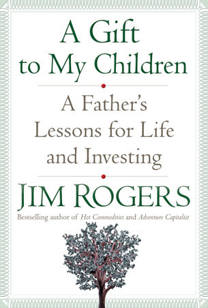

吉姆·罗杰斯（Jim Rogers）1942年生于亚拉巴马州，五岁时就在棒球场捡空瓶、卖花生，耶鲁大学毕业后获奖学金进入牛津大学贝利奥尔学院。他在华尔街结识乔治·索罗斯，未满三十岁共同创办后来称为量子基金的投资合伙企业，三十七岁退出日常管理；此后曾在哥伦比亚商学院授课，并于1990至1992年骑摩托车穿越六大洲、行程超过十万英里。Random House于2009年4月出版《A Gift to My Children: A Father's Lessons for Life and Investing》，英文电子版112页、ISBN 978-1-58836-776-1。中国青年出版社更早在2009年1月推出洪兰译本《投资大师罗杰斯给宝贝女儿的12封信》，ISBN为978-7-5006-8497-8；繁体版则于2008年出版。中英文出版顺序不同，不能简单把2009年英文版当成全书最早面世的版本。
十二封信把投资原则改写成孩子能理解的生活场景。第一封题为"Swim Your Own Races: Do Not Let Others Do Your Thinking for You"：罗杰斯承认，职业早期曾因资深同事意见放弃自己的研究，几次投资都失败；后来他在一次晚餐上提出买入陷入困境的洛克希德，被同桌嘲笑，约六年后该股因出售亏损部门、受益于国防电子业务而大幅上涨。他用这个故事区分固执与独立判断——先研究，再决定，而不是为了反对共识而反对。第一封还引用1964年奥运游泳冠军Donna de Varona的回答：不再盯着旁边泳道，开始游自己的比赛。其他信谈寻找真正喜欢的工作、坚持、储蓄、信用、学习历史和语言、亲自去不同国家观察。出版社简介列出的例子很具体：五岁收集空瓶、从亚拉巴马进入耶鲁后努力取得牛津奖学金、骑车穿越六大洲，以及在20世纪80年代多数西方投资者怀疑中国时开始研究和投资中国。
罗杰斯反复说"没有什么真正是新的"：铁路、飞机、电视和互联网都曾被包装成前所未有的繁荣，技术可以改变世界，买入价格却仍决定投资结果。他也把全球视角落实为家庭选择——2007年前后从纽约迁往新加坡，让两个女儿学习普通话，因为他判断经济重心正转向亚洲。书中连择偶、礼仪和购物也写得很私人，例如提醒女儿男孩会比她们更需要这段关系、去杂货店前先吃饱、不要询问别人赚多少钱。这些内容有鲜明的父亲口吻和作者偏好，并非中立教材。洛克希德的百倍回报、中国崛起和量子基金经历都由罗杰斯用事后视角讲述；读者应把它们看成他解释自身信念的案例，而不是保证"逆向"必然获利。尤其是对国家和技术周期的判断，需要与当时估值、政策和失败案例一起核查。
小说家尼古拉斯·斯帕克斯（Nicholas Sparks）在出版社收录的推荐语中写道："What a lovely, lovely book!...It is, of course, a love letter to your daughters"，并说其中装着父亲应该给孩子的忠告。更准确地说，这是一份浓缩后的家庭备忘录：它没有资产配置、估值模型或交易记录，却把研究习惯落到日常行为——买东西前先判断是否值得，借钱后按时偿还，面对流行意见先查历史，接到建议先补足自己的知识。全书篇幅很短，许多断言只提供故事而没有反例，正适合由家长和孩子继续追问证据。最值得讨论的也许不是罗杰斯哪次押注成功，而是一个更难的问题：怎样留下决策记录，使人能区分研究带来的正确、运气带来的正确，以及事后叙事对失败的删减。